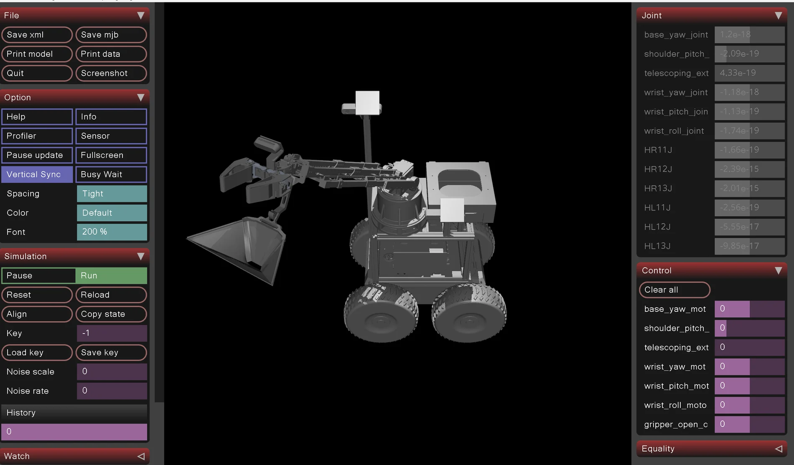

Soft Robotics Berry Harvesting
A MuJoCo simulation pipeline for a complex harvesting manipulator, built from an existing CAD/URDF hardware platform and prepared for manipulation research.

I developed the simulation pipeline by converting and restructuring assets from an existing hardware platform. The work involved resolving coordinate-frame errors, mesh orientation, origins, hierarchy, and complex mechanism structure across hundreds of geometry files.
The cleaned environment is structured for upcoming inverse kinematics and motion-planning experiments, with planned integration of ROS 2, fruit detection and pose estimation, visual servoing, and learning-based manipulation.
Interactive MuJoCo-derived model
Explore the final harvesting-arm MJCF as an interactive browser twin with base yaw, shoulder pitch, telescoping extension, three wrist axes, and coupled gripper control. Every visual component is retained; the web build only consolidates and quantizes geometry for GPU rendering.
Launch interactive model ↗